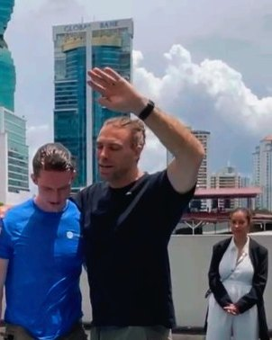

LifeGroups are how people here get to know each other.
Small groups of people who meet regularly in homes and at the church, to study the Bible together.

- What
- Small groupsStudying the Bible together
- Where
- HomesAcross the city, and at church
- To join
- Just askAnyone, after the service. No commitment.
What a group is for
A place to be known
People walk alongside each other through life’s highs and lows.
A place to be encouraged
Studying the Bible with others who are going after the same thing.
A place to serve
Room to care for each other, in ways that fit your gifts.
How joining works
- First
Ask anyone after the service
- Then
We help you find a group near you
- After that
Go once and see. No commitment.
Serving is another way in
More than 20 volunteers serve every week: with kids, welcoming people, music, and graphics and photography.
Being on a team with the same few people every week is one of the quickest ways to get known here. Ask anyone after the service.

Baptism
Baptism is an outward expression of a personal commitment to Jesus.
If you’re thinking about it, it starts with a conversation. Talk to anyone on a Sunday.

The weekly email
One email a week with what’s happening at LifeBridge.
Sign up for the weekly email